Shikhar Dhawan
Cricketer

Robin Uthappa
Cricketer

Shubhankar Sharma
Golfer

Joshna Chinappa
Squash Player
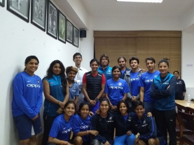
BCCI Women's
BCCI Women's
Cricket Team
Cricket
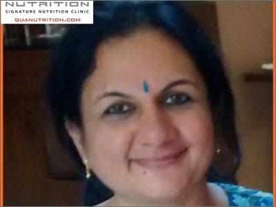
Saroj
Medical
Bhavna Bhalla
Medical Nutrition
Amit Darole
Corporate Nutrition
Mabel Fernandes
Corporate Nutrition
Aruna M Noronha
Corporate Nutrition
Pradeep Mariappan
Corporate Nutrition
Vivek Karat
Corporate Nutrition
Tyrone Machado
International Plan
Rajganesh D L
International Plan
Amulya Mantha
International Plan
Vandana Jha
International Plan
Kulwant Singh
International Plan

K Kiran Kumar Raju
Biker

Sushil Kumar
Wrestler

Jennifer Luikham
Tennis
Supriyo Mondal
Swimmer

Trishul Chinappa
Golfer
Madhurjya Bohra
International
Triathlete
Shubh Kumar
Weight Gain
Raj Sri
New Life
Leelavathi P
New Life
Lakshmi N S
New Life
Akshaya Kashyap
New Life
Nidhi Nikunj
New Life
Anushree Arora
Kids Nutrition
Ajitabh Dey
Kids Nutrition
Veena Muralidhar
Kids Nutrition
Shiwaji Doifode
Kids Nutrition
Neeraj P
Kids Nutrition
Anju Kadam
Entrepreneur
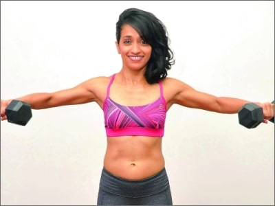
Shwetambari Shetty
Fitness Guru
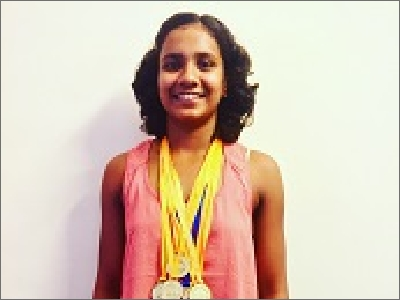
Mayuri Lingaraj
Swimmer
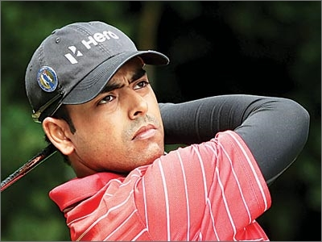
Anirban Lahiri
Golfer
Dinaz
Guinness Record
Holder
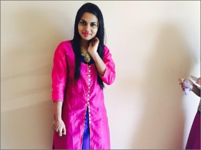
Yashaswini N V
Weight Loss
Vidhya D
Weight Loss
Kenneth Cardozo
Weight Gain
Avinash Kumar
Weight Gain
Ali Tahir
Weight Gain
Suhasini
Wedding Bells
Aditi Sirsat
Wedding Bells
karthik BV
Wedding Bells
Shreya Kalra
Wedding Bells
Poonam Shirsat
Wedding Bells
Harsh
Wedding Bells
Nayantara R
Mental Nutrition
Remya Actress
Actress
Adil Kalyanpur
National Junior Tennis Champion
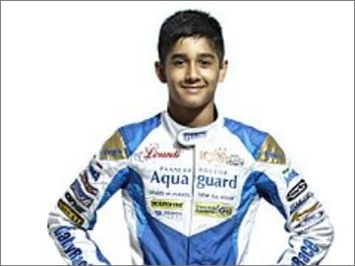
Yash Aradhya
Go Karting Champion
Sneha Reddy
Tennis Player
Sachin Kumar
Genetic Testing
Gabriello
Model
Kripa Williams
Nutrition For You
William Draper
Beauty
Aravind Mangal P
Beauty
Rituparna Roy
Beauty
Mobeen Ali
Beauty
Charu Jain
Beauty
Anuradha R
Mental Nutrition
Vincent S
Mental Nutrition
Shreya Saha
Mental Nutrition
N.S.Vishnu
Mental Nutrition
Kritika Sinha
Medical Nutrition

Aniruddha Budhya
Nutrition For you
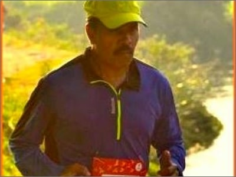
Mr. Yegnesh
Nutrition for you
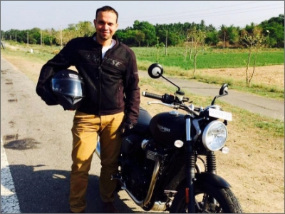
Mr. Vickram Murthy
Nutrition For You
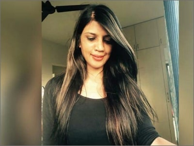
Nirupama Surana
Mrs India World
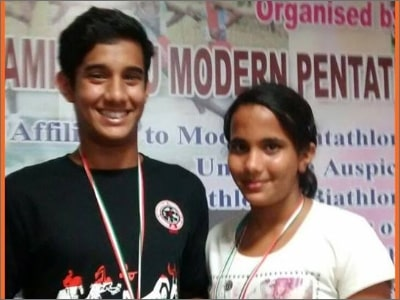
Ananya and Taran
Nutrition For Kids
Shyamasree
Weight Loss
Varsha Rajan
Medical Nutrition
Sonam Priya
Weight Gain
Navaneeth Krishnan
Weight Loss
Mahua Chowdhury
Nutrition For You
Kartikeyan VS
Nutrition For You

Bharath DV
Nutrition For You
Vasundhara Sandeep
Medical
Kapil Tyagi
Football Player
Rajitha Vasu
Track Athlete
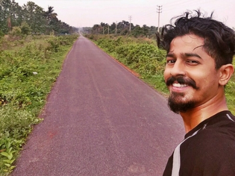
Pradeep Ram
Nutrition for You
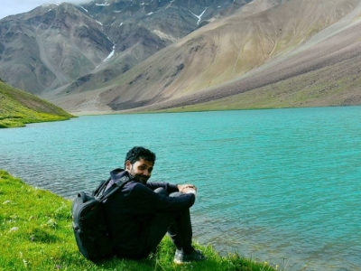
Navaneeth Krishnan
Nutrition for you
Anil Panchal
Nutrition for you
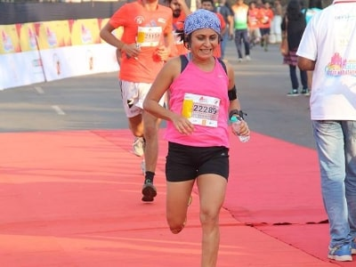
Priyam Thomas
Athlete
Sami Akhtar
Nutrition For You
Daegal Dodinho
Nutrition For You

Iswarya Balakrishnan
Weight Loss
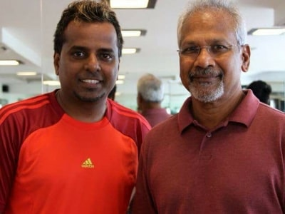
Senthil Kumaran
Trainer
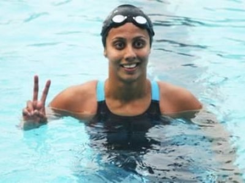